Developer & UI Designer
Muito prazer!
Eu sou o Uberlon :)
Apaixonado por Tecnologia & Design.
Sou Cientista da Computação por formação, especialista em Projetos de Aplicativos Móveis Multiplataforma e Designer.
Há mais de três anos venho me dedicando ao estudo da criação e desenvolvimento de produtos digitais, desde a concepção da marca, prototipação e codificação.
Processo
Desenvolvo os Projetos Web & Aplicativos utilizando HTML, CSS, JavaScript e, em breve, Flutter.
Também crio toda a parte de UX/UI Design, além de atuar na criação de Identidade Visual.
Para qualquer projeto seguimos: briefing, pesquisa,desenvolvimento, testes, ajustes, homologação e finalmente a entrega.
Trabalhos
vamos conversar?
Podemos “marcar um café” e entender seus principais objetivos. Dessa forma, posso ter uma ideia de como o meu trabalho poderá te ajudar.